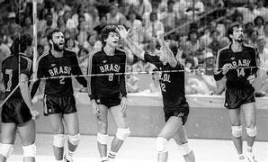
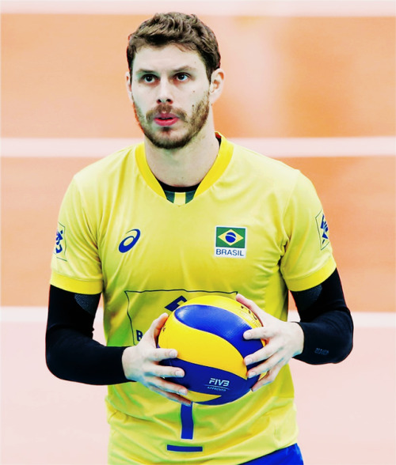

SUMÁRIO:
Em 1915, o voleibol foi praticado pela primeira vez no Brasil. Atualmente, o voleibol é um esporte muito conhecido.
Inicialmente, era considerado um jogo para meninas, mas essa percepção foi mudando ao longo do tempo.
Vale destacar que em 1984, a seleção brasileira de voleibol masculino conquistou a sua primeira medalha olímpica nos Jogos Olímpicos de Los Angeles.
A seleção ficou conhecida como a ‘Geração de Prata’ graças à medalha conquistada em 1984, que foi tão valorizada como se fosse uma medalha de ouro.
Esse momento representou um grande avanço na disseminação do vôlei no Brasil.
Oito anos depois, nos Jogos Olímpicos de Barcelona, a equipe masculina de vôlei conquistou o tão sonhado ouro.
No total, os homens somam 6 medalhas olímpicas, sendo 3 de ouro (1992, 2004 e 2016) e 3 de prata (1984, 2008 e 2012).
Quanto à seleção feminina, as mulheres conquistaram 5 medalhas olímpicas, sendo 2 de ouro (2008 e 2012), 1 de prata (2020) e 2 de bronze (1996 e 2000).
No Brasil, além do voleibol de quadra, é muito comum a prática desse esporte na praia. O vôlei de praia começou a ser praticado no nosso país em 1930.
Bruno Mossa de Rezende, conhecido como Bruninho, é um renomado jogador de vôlei brasileiro. Ele nasceu em 2 de julho de 1986, no Rio de Janeiro, e vem de uma família com grande tradição no voleibol. Seu pai, Bernardinho, é uma lenda do voleibol brasileiro como jogador e técnico.
Bruninho é levantador, uma posição crucial no vôlei, responsável por organizar as jogadas e distribuir as bolas para os atacantes.
Ele é conhecido por sua habilidade técnica, visão de jogo e capacidade de liderança em quadra.
Além disso, ele é reconhecido por sua mentalidade vencedora e por ser um jogador versátil e adaptável às diferentes situações de jogo.
A carreira de Bruninho é repleta de conquistas e títulos importantes. Ele conquistou três medalhas olímpicas de ouro com a seleção brasileira masculina de vôlei nos Jogos Olímpicos de 2016 no Rio de Janeiro, 2020 em Tóquio e 2024 em Paris, além de uma medalha de prata nos Jogos Olímpicos de 2012 em Londres.
Além das Olimpíadas, Bruninho também teve sucesso em competições como o Campeonato Mundial e a Liga Mundial de Vôlei.
Sua habilidade e consistência ao longo dos anos fizeram dele um dos melhores levantadores do mundo e uma figura importante no cenário do voleibol internacional.
Fora das quadras, Bruninho também é reconhecido por seu carisma e engajamento em projetos sociais e de responsabilidade social, mostrando seu compromisso não apenas com o esporte, mas também com a comunidade.
Bruninho é certamente considerado um dos melhores levantadores do Brasil e do mundo. Sua habilidade técnica, visão de jogo e capacidade de liderança o destacam como um jogador excepcional na posição de levantador.
Ele conquistou diversos prêmios e reconhecimentos ao longo de sua carreira, incluindo títulos de Melhor Levantador em competições como a Liga Mundial de Vôlei.
Como mencionado anteriormente, Bruninho vem de uma família com forte ligação com o voleibol.
Seu pai, Bernardinho, é uma lenda do voleibol brasileiro como jogador e técnico, tendo conquistado diversos títulos e reconhecimentos ao longo de sua carreira.
Sua mãe, Vera Mossa, também foi jogadora de vôlei, e seu irmão, Murilo Endres, é um ex-jogador da seleção brasileira masculina.
Apelido: Bruninho é conhecido pelo apelido carinhoso que recebeu desde jovem.
Seu pai, Bernardinho, o chamava de "Menino de Ouro" quando ele era criança, devido ao seu talento e potencial no voleibol.
Com o tempo, o apelido foi encurtado para "Bruninho" e ficou popular entre os fãs e colegas de equipe.
Uma curiosidade interessante sobre Bruninho é que, apesar de ser levantador, ele não é tão alto em comparação com muitos jogadores da posição em nível internacional.
Bruninho tem cerca de 1,90m de altura, o que é considerado relativamente baixo para um levantador de alto nível.
No entanto, sua habilidade técnica, inteligência tática e capacidade de leitura do jogo compensam essa diferença de estatura.
Além das conquistas coletivas com a seleção brasileira e seus clubes, Bruninho também recebeu reconhecimento individual ao longo de sua carreira.
Ele foi eleito o Melhor Levantador da Liga Mundial de Vôlei em várias ocasiões, demonstrando sua excelência e impacto como jogador fundamental para suas equipes.
Bruninho não só brilhou na seleção brasileira, mas também teve passagens de sucesso por clubes internacionais.
Ele jogou em ligas europeias, como na Itália, onde teve destacadas performances e contribuiu para a evolução do seu jogo ao competir em diferentes contextos e estilos de jogo.